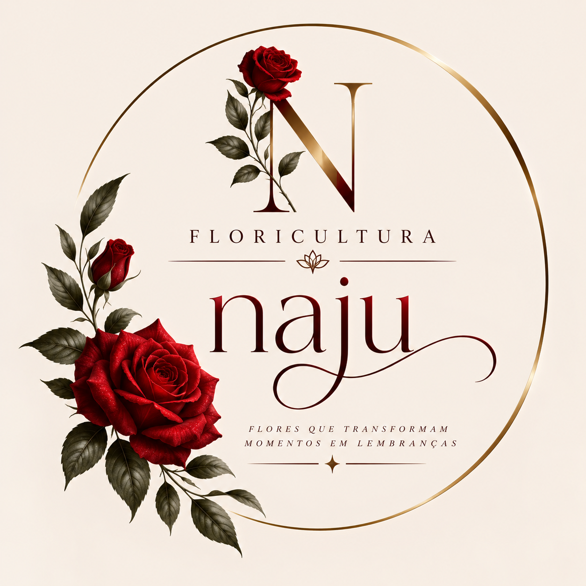
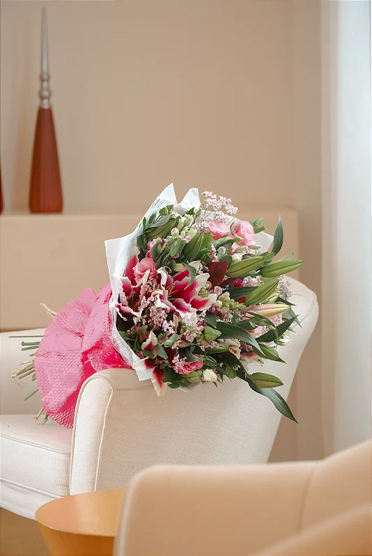
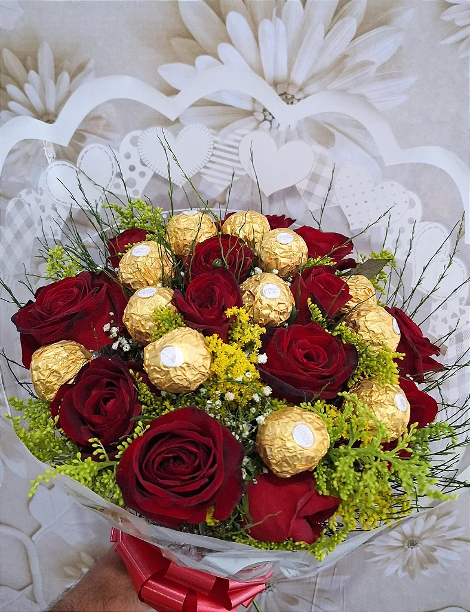
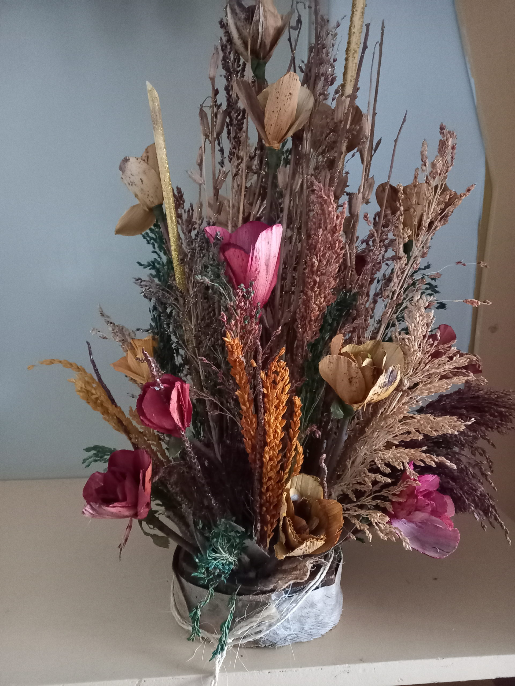
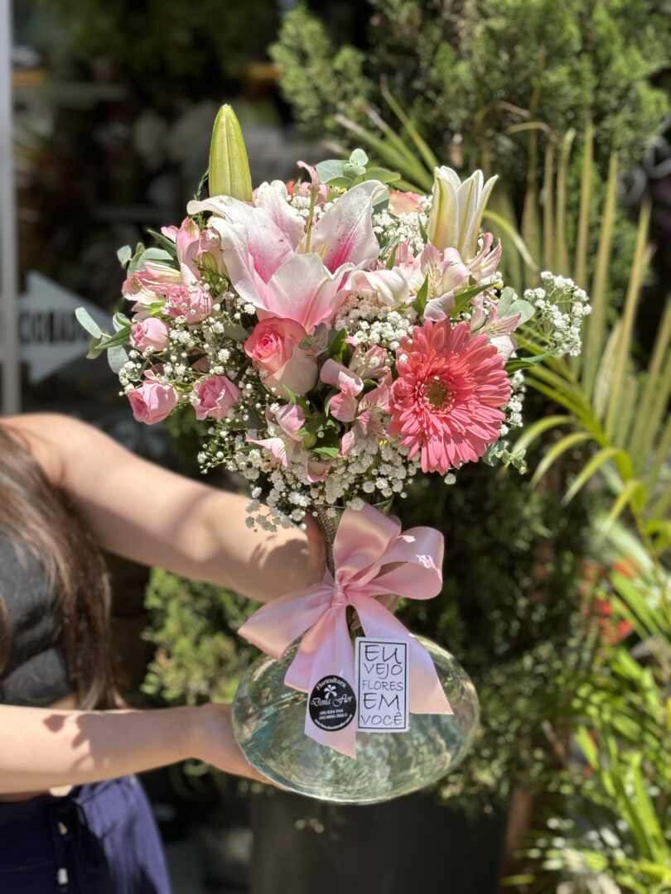

Flores
Na Floricultura Naju, acreditamos que algumas emoções merecem ser eternizadas. Um pedido de desculpas, uma declaração de amor, uma comemoração ou simplesmente a vontade de tornar o dia de alguém mais especial — para cada sentimento, existe uma flor capaz de falar por você. Nossa floricultura nasceu do desejo de transformar flores em experiências, criando buquês e arranjos cuidadosamente pensados, onde cada detalhe transmite beleza, delicadeza e sofisticação.
Para nós, flores são muito mais do que presentes: são sentimentos, histórias e momentos que permanecem. Por isso, escolhemos cada flor e cada composição com carinho, buscando transformar cada entrega em uma lembrança inesquecível. Na Floricultura Naju, você encontra uma forma elegante de expressar aquilo que muitas vezes as palavras não conseguem dizer — porque flores que transformam momentos se tornam lembranças que ficam.




Na Floricultura Naju, cada arranjo é criado para transformar flores em verdadeiras experiências. Selecionamos cuidadosamente cada espécie, cor e detalhe para compor combinações elegantes e harmoniosas, perfeitas para decorar ambientes ou presentear alguém especial. Do clássico ao sofisticado, nossos arranjos são preparados com carinho para que cada composição tenha sua própria personalidade.
Mais do que uma combinação de flores, criamos momentos que podem ser vistos, sentidos e lembrados. Seja para celebrar uma conquista, demonstrar carinho ou simplesmente surpreender alguém, nossos arranjos levam beleza e significado em cada detalhe. Na Naju, acreditamos que um arranjo bem escolhido pode transformar um espaço e tornar qualquer ocasião ainda mais especial. 🌹✨
Preencha os campos abaixo para entrar em contato.